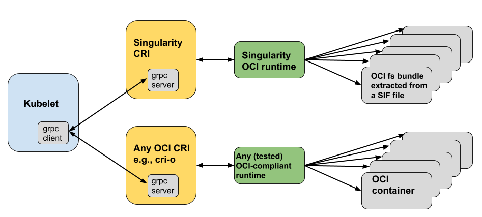

OCI Runtime¶
概述¶
OCI是 Open Containers Initiative 首字母的缩写， OCI是一个独立的组织，目标是开发关于容器化的开放标准。
Singularity通过所有和OCI有关的操作通过 oci 命令组进行，尽管这个命令组可以提供一个OCI的runtime供终端用户直接使用，
但是这一章我们还是主要描述Singularity提供的的OCI怎么在kubernetes中使用 Singularity Container Runtime Interface。
我们下面主要关注：
Mount和unmount OCI bundle
创建OCI容器实例
在最后，我们会讲一下Singularity怎么通过Singularity CRI和Kubernetes做集成。
Note
所有 oci 命令组下的命令都需要root权限。
Mounted OCI Bundle¶
Mount OCI Bundle¶
下面的讲述使用 BusyBox 作为例子。
$ singularity pull docker://busybox
INFO: Starting build...
Getting image source signatures
Copying blob sha256:fc1a6b909f82ce4b72204198d49de3aaf757b3ab2bb823cb6e47c416b97c5985
738.13 KiB / 738.13 KiB [==================================================] 0s
Copying config sha256:5fffaf1f2c1830a6a8cf90eb27c7a1a8476b8c49b4b6261a20d6257d031ce4f3
575 B / 575 B [============================================================] 0s
Writing manifest to image destination
Storing signatures
INFO: Creating SIF file...
INFO: Build complete: busybox_latest.sif
上面只是一种下载容器的方式，更多方式可参考 Support for Docker and OCI。
为了使用OCI容器，需要首先mount容器的SIF文件：
$ sudo singularity oci mount ./busybox_latest.sif /var/tmp/busybox
通过 mount 命令, busybox_latest.sif 中的文件会作为 overlay 被mount到 /var/tmp/busybox。
$ sudo df -k
Filesystem 1K-blocks Used Available Use% Mounted on
udev 475192 0 475192 0% /dev
tmpfs 100916 1604 99312 2% /run
/dev/mapper/vagrant--vg-root 19519312 2620740 15883996 15% /
tmpfs 504560 0 504560 0% /dev/shm
tmpfs 5120 0 5120 0% /run/lock
tmpfs 504560 0 504560 0% /sys/fs/cgroup
tmpfs 100912 0 100912 0% /run/user/900
overlay 19519312 2620740 15883996 15% /var/tmp/busybox/rootfs
文件权限如下:
$ sudo ls -ld /var/tmp/busybox
drwx------ 4 root root 4096 Apr 4 14:30 /var/tmp/busybox
OCI Filesystem Bundle的内容¶
$ sudo ls -la /var/tmp/busybox
total 28
drwx------ 4 root root 4096 Apr 4 14:30 .
drwxrwxrwt 4 root root 4096 Apr 4 14:30 ..
-rw-rw-rw- 1 root root 9879 Apr 4 14:30 config.json
drwx------ 4 root root 4096 Apr 4 14:30 overlay
drwx------ 1 root root 4096 Apr 4 14:30 rootfs
将一个singularity容器转为一个 filesystem bundle，转换后的 filesystem bundle 包含满足OCI标准 OCI runtime specification 的数据和元数据。 这些数据和元数据在一个文件目录下:
config.json- 这是一个配置文件包含配置信息，必须在bundle的根目录下。容器的根目录rootfs
Note
因为目录本身 /var/tmp/busybox 并不是bundle的一部分，所以mount的时候mount到的路径可以任意选择。
查看 config.json 的内容， $ sudo cat /var/tmp/busybox/config.json | jq:
{
"ociVersion": "1.0.1-dev",
"process": {
"user": {
"uid": 0,
"gid": 0
},
"args": [
"/.singularity.d/actions/run"
],
"env": [
"PATH=/usr/local/sbin:/usr/local/bin:/usr/sbin:/usr/bin:/sbin:/bin",
"TERM=xterm"
],
"cwd": "/",
"capabilities": {
"bounding": [
"CAP_CHOWN",
"CAP_DAC_OVERRIDE",
"CAP_FSETID",
"CAP_FOWNER",
"CAP_MKNOD",
"CAP_NET_RAW",
"CAP_SETGID",
"CAP_SETUID",
"CAP_SETFCAP",
"CAP_SETPCAP",
"CAP_NET_BIND_SERVICE",
"CAP_SYS_CHROOT",
"CAP_KILL",
"CAP_AUDIT_WRITE"
],
"effective": [
"CAP_CHOWN",
"CAP_DAC_OVERRIDE",
"CAP_FSETID",
"CAP_FOWNER",
"CAP_MKNOD",
"CAP_NET_RAW",
"CAP_SETGID",
"CAP_SETUID",
"CAP_SETFCAP",
"CAP_SETPCAP",
"CAP_NET_BIND_SERVICE",
"CAP_SYS_CHROOT",
"CAP_KILL",
"CAP_AUDIT_WRITE"
],
"inheritable": [
"CAP_CHOWN",
"CAP_DAC_OVERRIDE",
"CAP_FSETID",
"CAP_FOWNER",
"CAP_MKNOD",
"CAP_NET_RAW",
"CAP_SETGID",
"CAP_SETUID",
"CAP_SETFCAP",
"CAP_SETPCAP",
"CAP_NET_BIND_SERVICE",
"CAP_SYS_CHROOT",
"CAP_KILL",
"CAP_AUDIT_WRITE"
],
"permitted": [
"CAP_CHOWN",
"CAP_DAC_OVERRIDE",
"CAP_FSETID",
"CAP_FOWNER",
"CAP_MKNOD",
"CAP_NET_RAW",
"CAP_SETGID",
"CAP_SETUID",
"CAP_SETFCAP",
"CAP_SETPCAP",
"CAP_NET_BIND_SERVICE",
"CAP_SYS_CHROOT",
"CAP_KILL",
"CAP_AUDIT_WRITE"
],
"ambient": [
"CAP_CHOWN",
"CAP_DAC_OVERRIDE",
"CAP_FSETID",
"CAP_FOWNER",
"CAP_MKNOD",
"CAP_NET_RAW",
"CAP_SETGID",
"CAP_SETUID",
"CAP_SETFCAP",
"CAP_SETPCAP",
"CAP_NET_BIND_SERVICE",
"CAP_SYS_CHROOT",
"CAP_KILL",
"CAP_AUDIT_WRITE"
]
},
"rlimits": [
{
"type": "RLIMIT_NOFILE",
"hard": 1024,
"soft": 1024
}
]
},
"root": {
"path": "/var/tmp/busybox/rootfs"
},
"hostname": "mrsdalloway",
"mounts": [
{
"destination": "/proc",
"type": "proc",
"source": "proc"
},
{
"destination": "/dev",
"type": "tmpfs",
"source": "tmpfs",
"options": [
"nosuid",
"strictatime",
"mode=755",
"size=65536k"
]
},
{
"destination": "/dev/pts",
"type": "devpts",
"source": "devpts",
"options": [
"nosuid",
"noexec",
"newinstance",
"ptmxmode=0666",
"mode=0620",
"gid=5"
]
},
{
"destination": "/dev/shm",
"type": "tmpfs",
"source": "shm",
"options": [
"nosuid",
"noexec",
"nodev",
"mode=1777",
"size=65536k"
]
},
{
"destination": "/dev/mqueue",
"type": "mqueue",
"source": "mqueue",
"options": [
"nosuid",
"noexec",
"nodev"
]
},
{
"destination": "/sys",
"type": "sysfs",
"source": "sysfs",
"options": [
"nosuid",
"noexec",
"nodev",
"ro"
]
}
],
"linux": {
"resources": {
"devices": [
{
"allow": false,
"access": "rwm"
}
]
},
"namespaces": [
{
"type": "pid"
},
{
"type": "network"
},
{
"type": "ipc"
},
{
"type": "uts"
},
{
"type": "mount"
}
],
"seccomp": {
"defaultAction": "SCMP_ACT_ERRNO",
"architectures": [
"SCMP_ARCH_X86_64",
"SCMP_ARCH_X86",
"SCMP_ARCH_X32"
],
"syscalls": [
{
"names": [
"accept",
"accept4",
"access",
"alarm",
"bind",
"brk",
"capget",
"capset",
"chdir",
"chmod",
"chown",
"chown32",
"clock_getres",
"clock_gettime",
"clock_nanosleep",
"close",
"connect",
"copy_file_range",
"creat",
"dup",
"dup2",
"dup3",
"epoll_create",
"epoll_create1",
"epoll_ctl",
"epoll_ctl_old",
"epoll_pwait",
"epoll_wait",
"epoll_wait_old",
"eventfd",
"eventfd2",
"execve",
"execveat",
"exit",
"exit_group",
"faccessat",
"fadvise64",
"fadvise64_64",
"fallocate",
"fanotify_mark",
"fchdir",
"fchmod",
"fchmodat",
"fchown",
"fchown32",
"fchownat",
"fcntl",
"fcntl64",
"fdatasync",
"fgetxattr",
"flistxattr",
"flock",
"fork",
"fremovexattr",
"fsetxattr",
"fstat",
"fstat64",
"fstatat64",
"fstatfs",
"fstatfs64",
"fsync",
"ftruncate",
"ftruncate64",
"futex",
"futimesat",
"getcpu",
"getcwd",
"getdents",
"getdents64",
"getegid",
"getegid32",
"geteuid",
"geteuid32",
"getgid",
"getgid32",
"getgroups",
"getgroups32",
"getitimer",
"getpeername",
"getpgid",
"getpgrp",
"getpid",
"getppid",
"getpriority",
"getrandom",
"getresgid",
"getresgid32",
"getresuid",
"getresuid32",
"getrlimit",
"get_robust_list",
"getrusage",
"getsid",
"getsockname",
"getsockopt",
"get_thread_area",
"gettid",
"gettimeofday",
"getuid",
"getuid32",
"getxattr",
"inotify_add_watch",
"inotify_init",
"inotify_init1",
"inotify_rm_watch",
"io_cancel",
"ioctl",
"io_destroy",
"io_getevents",
"ioprio_get",
"ioprio_set",
"io_setup",
"io_submit",
"ipc",
"kill",
"lchown",
"lchown32",
"lgetxattr",
"link",
"linkat",
"listen",
"listxattr",
"llistxattr",
"_llseek",
"lremovexattr",
"lseek",
"lsetxattr",
"lstat",
"lstat64",
"madvise",
"memfd_create",
"mincore",
"mkdir",
"mkdirat",
"mknod",
"mknodat",
"mlock",
"mlock2",
"mlockall",
"mmap",
"mmap2",
"mprotect",
"mq_getsetattr",
"mq_notify",
"mq_open",
"mq_timedreceive",
"mq_timedsend",
"mq_unlink",
"mremap",
"msgctl",
"msgget",
"msgrcv",
"msgsnd",
"msync",
"munlock",
"munlockall",
"munmap",
"nanosleep",
"newfstatat",
"_newselect",
"open",
"openat",
"pause",
"pipe",
"pipe2",
"poll",
"ppoll",
"prctl",
"pread64",
"preadv",
"prlimit64",
"pselect6",
"pwrite64",
"pwritev",
"read",
"readahead",
"readlink",
"readlinkat",
"readv",
"recv",
"recvfrom",
"recvmmsg",
"recvmsg",
"remap_file_pages",
"removexattr",
"rename",
"renameat",
"renameat2",
"restart_syscall",
"rmdir",
"rt_sigaction",
"rt_sigpending",
"rt_sigprocmask",
"rt_sigqueueinfo",
"rt_sigreturn",
"rt_sigsuspend",
"rt_sigtimedwait",
"rt_tgsigqueueinfo",
"sched_getaffinity",
"sched_getattr",
"sched_getparam",
"sched_get_priority_max",
"sched_get_priority_min",
"sched_getscheduler",
"sched_rr_get_interval",
"sched_setaffinity",
"sched_setattr",
"sched_setparam",
"sched_setscheduler",
"sched_yield",
"seccomp",
"select",
"semctl",
"semget",
"semop",
"semtimedop",
"send",
"sendfile",
"sendfile64",
"sendmmsg",
"sendmsg",
"sendto",
"setfsgid",
"setfsgid32",
"setfsuid",
"setfsuid32",
"setgid",
"setgid32",
"setgroups",
"setgroups32",
"setitimer",
"setpgid",
"setpriority",
"setregid",
"setregid32",
"setresgid",
"setresgid32",
"setresuid",
"setresuid32",
"setreuid",
"setreuid32",
"setrlimit",
"set_robust_list",
"setsid",
"setsockopt",
"set_thread_area",
"set_tid_address",
"setuid",
"setuid32",
"setxattr",
"shmat",
"shmctl",
"shmdt",
"shmget",
"shutdown",
"sigaltstack",
"signalfd",
"signalfd4",
"sigreturn",
"socket",
"socketcall",
"socketpair",
"splice",
"stat",
"stat64",
"statfs",
"statfs64",
"symlink",
"symlinkat",
"sync",
"sync_file_range",
"syncfs",
"sysinfo",
"syslog",
"tee",
"tgkill",
"time",
"timer_create",
"timer_delete",
"timerfd_create",
"timerfd_gettime",
"timerfd_settime",
"timer_getoverrun",
"timer_gettime",
"timer_settime",
"times",
"tkill",
"truncate",
"truncate64",
"ugetrlimit",
"umask",
"uname",
"unlink",
"unlinkat",
"utime",
"utimensat",
"utimes",
"vfork",
"vmsplice",
"wait4",
"waitid",
"waitpid",
"write",
"writev"
],
"action": "SCMP_ACT_ALLOW"
},
{
"names": [
"personality"
],
"action": "SCMP_ACT_ALLOW",
"args": [
{
"index": 0,
"value": 0,
"op": "SCMP_CMP_EQ"
},
{
"index": 0,
"value": 8,
"op": "SCMP_CMP_EQ"
},
{
"index": 0,
"value": 4294967295,
"op": "SCMP_CMP_EQ"
}
]
},
{
"names": [
"chroot"
],
"action": "SCMP_ACT_ALLOW"
},
{
"names": [
"clone"
],
"action": "SCMP_ACT_ALLOW",
"args": [
{
"index": 0,
"value": 2080505856,
"op": "SCMP_CMP_MASKED_EQ"
}
]
},
{
"names": [
"arch_prctl"
],
"action": "SCMP_ACT_ALLOW"
},
{
"names": [
"modify_ldt"
],
"action": "SCMP_ACT_ALLOW"
}
]
}
}
}
下面命令可以查看root.path下的属性, $ sudo cat /var/tmp/busybox/config.json | jq [.root.path]：
[
"/var/tmp/busybox/rootfs"
]
/var/tmp/busybox/rootfs 是容器的root目录， 其下面的内容包括:
$ sudo ls /var/tmp/busybox/rootfs
bin dev environment etc home proc root singularity sys tmp usr var
Note
environment 和 singularity 软链到 .singularity.d 目录。
bundle的定义只关心一个容器和它的配置数据怎样存储在本地的文件系统，以便OCI的runtime能使用它。除了 root.path, config.json 还包含多个其它的属性，比如:
ociVersion- 一个必须的属性，其用来说明这个bundle兼容的OCI标准的版本。process- 这是一个可选的属性，用来指定容器的进程，当容器运行（start，run）时，其会运行args属性中执行的程序。比如$ sudo cat /var/tmp/busybox/config.json | jq [.process.args]:
[
[
"/.singularity.d/actions/run"
]
]
run 就是我们singularity容器中熟悉的runscript，如果这个容器是通过Docker镜像或者OCI创建，singularity会使用镜像中的 ENTRYPOINT 和 CMD 作为runscript; 更多信息请参考 Support for Docker and OCI 中的 Directing Execution。
如果需要更输入的了解 config.json 中属性的意思, 请参考 implementation guide。
技术上来说, overlay 目录不是一个OCI标准需要的，但是overlay Persistent Overlays
允许在一个只读的容器中写入内容。
Note
SIF是一种可扩展的格式， 符合OCI标准的filesystem bundle就是它的一种扩展。
创建OCI容器实例¶
通过 ‘OCI mounting’将一个SIF文件解压为一个OCI的filesystem bundle后，我们就可以使用创建OCI容器的实例。
$ sudo singularity oci create -b /var/tmp/busybox busybox1
Note
如果SIF文件是通过Docker和OCI镜像创建的， config.json 文件是包含在SIF文件中的。
如果SIF文件是通过其他途径创建的，那么在调用 singularity oci mount ... 命令的时候，会自动的在filesystem bundle目录下创建一个 config.json。
singularity oci mount ... 的时候也会将SIF中的root目录mount到bundle的 rootfs, 同时建立一个overlay的文件系统，将其mount到bundle的 overlay。
这个例子中, filesystem bundle在 /var/tmp/busybox， 创建的实例为 busybox1。
Note
上述命令创建一个容器实例， 同个容器可以创建多个实例。
容器实例的状态可以通过 $ sudo singularity oci state busybox1 查看：
{
"ociVersion": "1.0.1-dev",
"id": "busybox1",
"status": "created",
"pid": 6578,
"bundle": "/var/tmp/busybox",
"createdAt": 1554389921452964253,
"attachSocket": "/var/run/singularity/instances/root/busybox1/attach.sock",
"controlSocket": "/var/run/singularity/instances/root/busybox1/control.sock"
}
状态的这些参数符合OCI运行时标准，关于OCI运行时的更多信息， 请参考 这里。
create 命令有很多选项。
Unmoun OCI Bundle¶
使用下面命令unmount一个mounted的OCI filesystem bundle:
$ sudo singularity oci umount /var/tmp/busybox
Note
/var/tmp/busybox 是bundle的目录。
和Kubernetes集成¶
在 这里, 我们讲到过，singularity OCI最初的需求来自于singularity和 Kubernetes 的集成 简单来讲，Kubernetes是一个开源的容器编排器，由Google发起，现在已经贡献到 Cloud Native Compute Foundation (CNCF)。 Kubernetes是CNCF已经毕业的项目，现在广泛用于生产环境。尽管Kubernetes强调对服务的编排，但是很多容器计算的需求也在这个平台上运行。 而且，针对AI应用，一个整合服务和传统HPC基础架构的平台更有吸引力。因此Singularity容器和Kubernetes的整合就很必要了。
Singularity容器和Kubernetes集成的架构如下。 在2016年下半年，Kubernetes引入了Container Runtime Interface (CRI)， 下面的架构和原始的 a Kubernetes blog post 有些不同。 下面的分支是原生的架构;它主要强调各部分（CRI和容器，以及运行时 ）需要满足OCI的标准。
从上面的架构可以看到要实现singularity和kubernetes的集成，需要实现如下两个部分：
Singularity CRI
Singularity OCI运行时
关于Singularity CRI有一个独立的开源项目负责实现 singularity cri。 从架构图上可以看到Singularity CRI依赖于Singularity OCI runtime，这里描述了CRI的安装依赖 an installation prerequisite。 Singularity CRI的面向用户的文档提供了怎么和kubernetes集成使用的细节，当然其中也包括怎么使用从 Sylabs Cloud Container Library 上获取的容器。 因为整个安装部署可以放在一个Singularity的容器实例中， 因此Singularity CRI可以很方便使用Sykube（仿照 Minikube 进行的实现）来进行单机使用, Singularity CRI文档中包含了 怎么使用Sykube。
和OCI标准兼容的Singularity OCI运行时是这个文档强调的重点。换句话说通过使用Singularity的OCI运行时，Kubernetes的命令 (Basic Usage in the Singularity CRI documentation)可以通过CRI调用到Singularity容器。 Singularity CRI是一个 gRPC server, Kubelets 可以调用CRI来直接操作kubernetes容器。